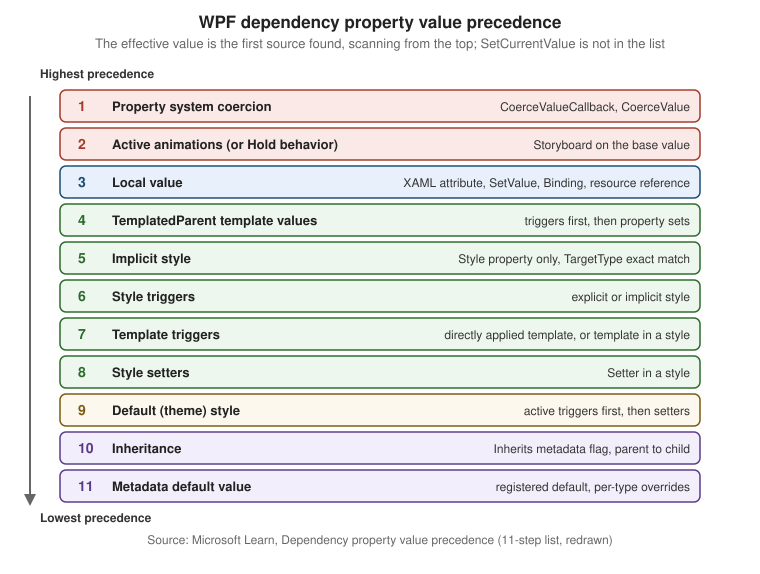

Dependency Properties & Attached Properties
|
This content was generated with the assistance of AI and should be verified against the official documentation before being relied on in production. |
Almost every property you set in WPF XAML (Background, Width, Text, IsEnabled, Grid.Row) is a dependency
property. A dependency property is a normal-looking CLR property whose value is not stored in a field of the object
but is computed by the WPF property system from several possible inputs: a local value, a style, a template, an
animation, a binding, a value inherited from a parent, or a default. That computation is why styles, triggers, data
binding, animation and theming all work on the same properties. This page was written against .NET 10 LTS (latest
patch 10.0.13) with C# 14, Visual Studio 2026 18.11.1, Windows App SDK 2.5.1 and CommunityToolkit.Mvvm
8.4.2 on Windows 10 and Windows 11. .NET 11 is at release candidate 2 (11.0.0-rc.2) with general availability
expected at .NET Conf, 10 to 13 November 2026; the property system is unchanged by it as far as the release notes
published at the time of writing show. WPF is the stack in focus; WinUI 3 and Windows Forms are compared in a table
further down.
The running scenario is Bookshelf Desktop. Here it supplies a StarRating control (a custom FrameworkElement with
Rating, Maximum and a read-only IsRated property), a Bookshelf.Desktop.Theming.UiDensity attached property that
flows down the element tree, and two attached behaviours: select-all-on-focus for the search box and a double-click
command for the book list. The BooksViewModel, BookDetailsViewModel and BookViewModel are plain
CommunityToolkit.Mvvm objects, and that matters for a rule stated early: view models are not dependency
objects. They implement INotifyPropertyChanged (through ObservableObject), and the dependency properties live on
the view side (controls, behaviours), where the binding engine connects the two. The binding syntax itself is on the
Data Binding page; the XAML syntax for setting properties, including attached property syntax, is on the XAML Language Fundamentals page (XAML Language Fundamentals), and styles and triggers
(which are the main consumers of precedence) have their own later page.
Why dependency properties exist
A plain CLR property backed by a field is cheap and simple, but it cannot take part in the WPF features that the user interface depends on. Microsoft Learn lists what a dependency property adds. The table maps each capability to the part of Bookshelf Desktop that needs it.
| Capability | What it means | Bookshelf Desktop example |
|---|---|---|
Styles and triggers |
The property can be the target of a |
A style sets |
Data binding |
The property can be the target of a |
|
Dynamic resources |
The property can take a |
|
Inheritance |
An unset value comes from the parent element. |
|
Animation |
Storyboards can animate the property. |
|
Change notification |
The property system calls a callback whenever the effective value changes, whatever the reason. |
|
Metadata |
Default value, "this affects layout", "binds two-way by default", "inherits" are declared once for the property. |
|
Designer support |
The Visual Studio designer reads the registered properties and edits them. |
|
The cost model is also part of the design. The documentation states that dependency properties use sparse storage:
the property system keeps only the values that were actually set on an instance, not one field per property for every
instance of every control, and a control such as a Button has a very large number of properties.
Reading a dependency property is a lookup through the precedence rules, so it is slower than reading a field. That is
acceptable for UI properties, and wrong for hot data such as the contents of a 100,000-element collection.
Source: Dependency properties overview
Anatomy of a dependency property
A dependency property needs four pieces, and the naming is mandatory, not stylistic:
-
a class that derives from
DependencyObject(everything in the WPF element hierarchy does, and so doFreezableobjects such as brushes); -
a
public static readonly DependencyPropertyidentifier field named PropertyNameProperty; -
a call to
DependencyProperty.Register(orRegisterReadOnly, orRegisterAttached) that assigns that field, giving the name, the value type, the owner type and optionally metadata and a validation callback; -
a CLR wrapper property with the same name, whose accessors do nothing but
GetValueandSetValue.
Notice that the XAML loader does not call the wrapper: it looks up the identifier by the name and calls SetValue
directly. A binding does the same. So any logic placed in the wrapper’s setter runs only for C# callers, and a value
that arrives from XAML, a style or a binding skips it. This is why the documentation insists that the wrapper contain
only GetValue and SetValue; all logic goes into the metadata callbacks.
Source: Custom dependency properties
A complete example: the StarRating control
The control below draws a row of stars as a filled bar (to keep the sample free of image assets). It shows registration, metadata, validation, coercion, a property-changed callback, a read-only property and layout flags in a single class.
using System.Globalization;
using System.Windows;
using System.Windows.Media;
namespace Bookshelf.Desktop.Controls;
/// <summary>Shows a book rating as filled and empty stars.</summary>
public class StarRating : FrameworkElement
{
private const double StarSize = 16;
// 1. A read-only property: RegisterReadOnly returns a *key*, kept private.
private static readonly DependencyPropertyKey IsRatedPropertyKey =
DependencyProperty.RegisterReadOnly(
name: nameof(IsRated),
propertyType: typeof(bool),
ownerType: typeof(StarRating),
typeMetadata: new FrameworkPropertyMetadata(defaultValue: false));
// The public identifier is derived from the key: it can read, not write.
public static readonly DependencyProperty IsRatedProperty = IsRatedPropertyKey.DependencyProperty;
// 2. Maximum: layout changes when it changes; its callback re-coerces Rating.
public static readonly DependencyProperty MaximumProperty =
DependencyProperty.Register(
name: nameof(Maximum),
propertyType: typeof(int),
ownerType: typeof(StarRating),
typeMetadata: new FrameworkPropertyMetadata(
defaultValue: 5,
flags: FrameworkPropertyMetadataOptions.AffectsMeasure,
propertyChangedCallback: OnMaximumChanged),
validateValueCallback: IsValidMaximum);
// 3. Rating: redraws, binds two-way by default, is coerced into 0..Maximum.
public static readonly DependencyProperty RatingProperty =
DependencyProperty.Register(
name: nameof(Rating),
propertyType: typeof(double),
ownerType: typeof(StarRating),
typeMetadata: new FrameworkPropertyMetadata(
defaultValue: 0.0,
flags: FrameworkPropertyMetadataOptions.AffectsRender
| FrameworkPropertyMetadataOptions.BindsTwoWayByDefault,
propertyChangedCallback: OnRatingChanged,
coerceValueCallback: CoerceRating),
validateValueCallback: IsValidRating);
// CLR wrappers: GetValue / SetValue and nothing else.
public int Maximum
{
get => (int)GetValue(MaximumProperty);
set => SetValue(MaximumProperty, value);
}
public double Rating
{
get => (double)GetValue(RatingProperty);
set => SetValue(RatingProperty, value);
}
public bool IsRated
{
get => (bool)GetValue(IsRatedProperty);
private set => SetValue(IsRatedPropertyKey, value); // key, not identifier
}
// Validation: static, no instance, runs for every value including defaults.
private static bool IsValidMaximum(object value) => value is int max && max is >= 1 and <= 20;
private static bool IsValidRating(object value) =>
value is double rating && !double.IsNaN(rating) && !double.IsInfinity(rating);
// Coercion: has the instance, may depend on other properties.
private static object CoerceRating(DependencyObject d, object baseValue)
{
var control = (StarRating)d;
return Math.Clamp((double)baseValue, 0, control.Maximum);
}
private static void OnMaximumChanged(DependencyObject d, DependencyPropertyChangedEventArgs e) =>
d.CoerceValue(RatingProperty); // a smaller Maximum must clip Rating; a larger one restores it
private static void OnRatingChanged(DependencyObject d, DependencyPropertyChangedEventArgs e) =>
((StarRating)d).IsRated = (double)e.NewValue > 0;
protected override Size MeasureOverride(Size availableSize) => new(Maximum * StarSize + 32, StarSize);
protected override void OnRender(DrawingContext drawingContext)
{
var empty = Brushes.LightGray;
var filled = Brushes.Goldenrod;
for (var i = 0; i < Maximum; i++)
{
var fill = Math.Clamp(Rating - i, 0, 1);
var cell = new Rect(i * StarSize, 0, StarSize - 2, StarSize - 2);
drawingContext.DrawRectangle(empty, null, cell);
if (fill > 0)
{
drawingContext.DrawRectangle(filled, null, new Rect(cell.X, cell.Y, cell.Width * fill, cell.Height));
}
}
var label = new FormattedText(
Rating.ToString("0.#", CultureInfo.CurrentCulture),
CultureInfo.CurrentCulture,
FlowDirection,
new Typeface("Segoe UI"),
11,
Brushes.Black,
VisualTreeHelper.GetDpi(this).PixelsPerDip);
drawingContext.DrawText(label, new Point(Maximum * StarSize + 4, 0));
}
}Source: Custom dependency properties
Points to read in that listing:
-
The default value
0.0is adouble. A default whose type does not match the registeredpropertyType(for instance0for adoubleproperty) fails when the type’s static initializer runs, which surfaces as aTypeInitializationExceptionthe first time the class is used. The documentation says to make sure the default matches the registered type. -
IsRatedis written inside the class throughSetValue(IsRatedPropertyKey, ...). Outside code can read the property and bind to it, butSetValue(IsRatedProperty, ...)throws, andTwoWaybindings to it are rejected. -
The
OnMaximumChangedcallback callsCoerceValue(RatingProperty). Coercion is not re-evaluated automatically when an unrelated property changes; the dependent property has to be told to re-run it. -
Math.Clampin the coercion keeps the user-set (desired) value intact. See the coercion section below.
Using it from XAML needs no code-behind and no wrapper call; the loader calls SetValue with RatingProperty:
<Window x:Class="Bookshelf.Desktop.Views.BookDetailsWindow"
xmlns="http://schemas.microsoft.com/winfx/2006/xaml/presentation"
xmlns:x="http://schemas.microsoft.com/winfx/2006/xaml"
xmlns:controls="clr-namespace:Bookshelf.Desktop.Controls"
Title="Book details" Width="420" Height="240">
<Window.Resources>
<!-- Every StarRating in this window shows 10 stars unless it overrides Maximum locally. -->
<Style TargetType="controls:StarRating">
<Setter Property="Maximum" Value="10"/>
</Style>
</Window.Resources>
<StackPanel Margin="16">
<TextBlock Text="{Binding Title}" FontWeight="SemiBold"/>
<!-- BindsTwoWayByDefault: no Mode=TwoWay needed. -->
<controls:StarRating Rating="{Binding Rating}" Margin="0,8,0,0"/>
<!-- IsRated is read-only: it can be bound from, never to. -->
<TextBlock Text="Rated" Margin="0,8,0,0"
Visibility="{Binding IsRated, ElementName=ratingControl,
Converter={StaticResource BooleanToVisibilityConverter}}"/>
<controls:StarRating x:Name="ratingControl" Rating="{Binding Rating}" Maximum="5"/>
</StackPanel>
</Window>Source: Dependency properties overview
The BooleanToVisibilityConverter key is assumed to be declared in App.xaml (the converter ships with WPF, so a
<BooleanToVisibilityConverter x:Key="BooleanToVisibilityConverter"/> entry is enough). Converters are covered on the
Converters, Collection Views & Data Templates page.
Metadata and FrameworkPropertyMetadata options
Every dependency property carries a metadata object created at registration. For a type that derives from
FrameworkElement, use FrameworkPropertyMetadata, which extends PropertyMetadata (default value, property-changed
callback, coerce callback) with a set of boolean flags exposed through the FrameworkPropertyMetadataOptions
enumeration. The options are combined with |.
| Option | Meaning | Typical use |
|---|---|---|
|
A change requires a new measure pass for this element (the space it needs changes). |
|
|
A change requires a new arrange pass (position changes, size does not). |
|
|
A change requires the parent to measure again. |
A custom attached layout hint read by your own panel. The built-in |
|
A change requires the parent to arrange again. |
A custom attached position value read by your own panel. The built-in |
|
The element needs to be redrawn, but layout is unaffected. |
|
|
Children take the value from the nearest ancestor when they have no value of their own. Register with
|
|
|
Inheritance continues across a boundary that normally stops it (such as a |
Advanced; framework internals mostly. |
|
The property cannot be a binding target (the metadata |
Large objects where binding is not a real scenario. |
|
A binding on this property uses |
|
|
Navigation journaling should keep this value when a page is navigated away from. |
|
|
Changes to sub-properties of the value (for example of a |
Optimization for Freezable-typed properties. |
|
No option set (the default when no flags are passed). |
Properties that only need a value store. |
FrameworkPropertyMetadata has constructor overloads that take the default value, the flags, the
property-changed callback, the coerce callback, an isAnimationProhibited flag and a defaultUpdateSourceTrigger
(for properties that should, for example, update their binding source PropertyChanged by default). The flags exist
because the property system and the layout engine read them: setting AffectsMeasure is what makes InvalidateMeasure
run for you. Forgetting a flag is a visible bug (a control that changes size but is not re-laid out), and setting
AffectsMeasure where AffectsRender is enough is a performance bug, because a measure pass walks the subtree.
The documentation recommends the following reading of the layout flags: AffectsMeasure for anything that changes the
space an element occupies, AffectsArrange for anything that moves it without resizing it, and AffectsRender for
anything purely visual. Inherits carries a performance cost and the documentation says to set it only when needed.
Overriding metadata and adding an owner
A derived class can change the metadata of an inherited dependency property without re-registering it, and a class can reuse a property registered by a different class.
using System.Windows;
using System.Windows.Controls;
namespace Bookshelf.Desktop.Controls;
/// <summary>A TextBox that starts with a larger font and wraps its text.</summary>
public class SearchBox : TextBox
{
static SearchBox()
{
// OverrideMetadata: new default value for an inherited property, per derived type.
FontSizeProperty.OverrideMetadata(
typeof(SearchBox),
new FrameworkPropertyMetadata(16.0));
// A custom control gets its own default style (Themes/Generic.xaml).
DefaultStyleKeyProperty.OverrideMetadata(
typeof(SearchBox),
new FrameworkPropertyMetadata(typeof(SearchBox)));
}
}
/// <summary>Reuses TextBlock.TextProperty rather than registering a new "Caption" property.</summary>
public class Caption : FrameworkElement
{
public static readonly DependencyProperty TextProperty =
System.Windows.Controls.TextBlock.TextProperty.AddOwner(typeof(Caption));
public string Text
{
get => (string)GetValue(TextProperty);
set => SetValue(TextProperty, value);
}
}Source: Dependency property metadata
OverrideMetadata merges, but not uniformly: a PropertyChangedCallback supplied by the override is chained after the
base one, so both run, while a CoerceValueCallback supplied by the override replaces the base one, and a new default
value replaces the base default. Whatever you do not pass is kept from the base metadata. The validation
callback is not part of the metadata and cannot be overridden (see below).
Value precedence
When several inputs try to set the same property, the property system does not take "the last write". It evaluates a fixed ordered list and the first source that has a value wins. The official page calls it "the definitive order of precedence", highest first, and it has 11 steps.

| # | Source | What it covers |
|---|---|---|
1 |
Property system coercion |
The result of the property’s |
2 |
Active animations, or animations with a Hold behavior |
An animation wins over the base value even when the base value is local. |
3 |
Local values |
A XAML attribute or property element, the CLR wrapper, |
4 |
TemplatedParent template property values |
Only for elements created by a |
5 |
Implicit styles |
Applies only to the |
6 |
Style triggers |
A trigger inside an explicit or implicit style that exists in the page or application. Triggers in default styles are lower. |
7 |
Template triggers |
A trigger from a directly applied template or from a template inside a style. |
8 |
Style setter values |
A |
9 |
Default styles (theme styles) |
The control’s built-in style, selected through |
10 |
Inheritance |
A value inherited from the parent element, for properties registered with |
11 |
Default value from metadata |
The default registered with the property, possibly overridden per type. For an inheritable property, the default of the parent takes precedence over the default of the child. |
Three consequences matter every day:
-
A local value beats style, trigger and template values (except coercion and animation). That is why setting
Background="Red"on a button in XAML makes aStyletrigger that setsBackgroundon mouse-over have no effect, and the reason that a hand-setForegroundstops a theme style from greying out a disabled button. Put presentation in styles, not in attributes on each element, if it is meant to be overridable. -
Inside a style, triggers beat setters (step 6 against step 8), and a style beats the theme (steps 5 to 8 against 9). So an app-level style overrides the Fluent or Aero2 look, and a trigger overrides the style’s setter.
-
Coercion is above everything, including running animations, so a coerced range cannot be escaped by an animation or a local value.
The Style property is special. It cannot itself be styled, and only three things set it: an explicit style (acts as a
local value, step 3), an implicit style (step 5) and the default style (step 9, null until the theme is
evaluated).
Setting a value without destroying its source
Writing a local value (step 3) has a side effect: it replaces whatever local source was there, including a binding or a
DynamicResource. Two APIs fine-tune this:
| API | Effect |
|---|---|
|
Sets a local value. If the property had a local binding or dynamic resource reference, it is replaced and
|
|
Changes the current effective value without touching the source of the previous value and without giving the new value local precedence. A binding stays alive, and the next trigger or style action can set the property again. Use it in control code that reflects user interaction while the property may be bound. |
|
Removes the local value only. The new effective value is whatever the rest of the list gives (a theme style value, for instance), which is not necessarily the metadata default. |
|
Returns the local value, or |
|
Returns a |
The following snippet, from Bookshelf Desktop’s debugging toolbox, answers the question "why does this property have that value?":
using System.Diagnostics;
using System.Windows;
using System.Windows.Controls;
namespace Bookshelf.Desktop.Diagnostics;
public static class PropertyDiagnostics
{
/// <summary>Writes which precedence step supplied the value of a dependency property.</summary>
public static void Describe(DependencyObject target, DependencyProperty property)
{
ValueSource source = DependencyPropertyHelper.GetValueSource(target, property);
Debug.WriteLine(
$"{property.OwnerType.Name}.{property.Name} = {target.GetValue(property)} " +
$"from {source.BaseValueSource} " +
$"(animated: {source.IsAnimated}, coerced: {source.IsCoerced}, expression: {source.IsExpression})");
}
public static void Example(Button saveButton)
{
Describe(saveButton, Control.BackgroundProperty);
// For a button styled in App.xaml this prints a BaseValueSource such as Style or DefaultStyle,
// and Local once the code or the XAML sets Background directly.
}
}The BaseValueSource enumeration names the origins (for example Default, Inherited, DefaultStyle, DefaultStyleTrigger,
Style, TemplateTrigger, StyleTrigger, ImplicitStyleReference, ParentTemplate, ParentTemplateTrigger, Local).
The names were listed from knowledge of the API and are not reproduced in the precedence page itself, which links to the
reference documentation for them.
Change callbacks, coercion and validation
Three callbacks exist, and they differ in where they are registered and what they receive:
| Callback | Delegate | Registered in | Receives the instance? | Purpose |
|---|---|---|---|---|
Validate |
|
The |
No |
Reject values that are never valid. Cannot be overridden by derived classes. |
Coerce |
|
Metadata |
Yes |
Adjust a candidate value, possibly depending on other properties. |
Property changed |
|
Metadata |
Yes |
React after the effective value changed. The arguments carry |
Validation
A validate-value callback returns true when a value is acceptable. When it returns false, the property system throws
an ArgumentException (the documented example message is "'∞' is not a valid value for property 'CurrentReading'") and the
new value is not applied, so the code that sets the property must be ready to handle it. Validation runs for:
-
object initialization, when the default value is applied;
-
every
SetValue(and so every wrapper set, binding and XAML attribute); -
metadata overrides that specify a new default value.
Because the callback has no instance parameter, all instances share it: it can check "is this a legal Maximum?" but not
"is this legal given the other properties of this control?". That second job belongs to coercion. The Validation page covers how user input errors from bindings are surfaced to the user.
Coercion
A coerce callback returns the value the property should actually hold. It runs when the property is set and whenever
CoerceValue is called for it. Two properties of the mechanism are easy to miss:
-
The desired value is kept. The user-set value is retained alongside the coerced result. In the official
Gauge2sample,CurrentReading = 5withMaxReading = 10; loweringMaxReadingto 3 coerces the reading to 3, raising it to 4 gives 4, and raising it back to 10 brings the reading back to 5 without the code storing anything. The same happens inStarRating: shrinkMaximumfrom 10 to 3 and aRatingof 7 shows as 3; setMaximumback to 10 and it shows 7 again. -
Default values are not coerced. A property starts with its metadata default, or returns to it after
ClearValue, without passing through the coerce callback.
Returning DependencyProperty.UnsetValue from a coerce callback rejects the change: the previous value stays. The
official sample uses it together with GetValueSource to refuse locally set values. Circular dependencies between
coerced properties are legal but each change then triggers several re-evaluations, so the documentation advises
keeping the web of dependencies small and unambiguous.
The order of the three callbacks, as observed in practice, is validate the incoming value, coerce it, then raise the property-changed callback if the effective value differs from the old one. The Learn pages above describe each callback but do not give a single numbered sequence, so treat that order as common knowledge, not a documented guarantee.
The property-changed callback
The callback is where logic belongs: invalidate a cache, update a read-only property (as OnRatingChanged does), or hook
and unhook event handlers on the old and new value. It is static, so the instance arrives as the first argument. For
a property of a reference type that raises events, the OldValue and NewValue pair is exactly what the next section
needs.
Read-only dependency properties
A read-only dependency property is for state the control computes and the outside should only observe: IsMouseOver,
IsKeyboardFocused, ActualWidth, and StarRating.IsRated here.
| Step | Detail |
|---|---|
Register |
|
Expose the identifier |
|
Keep the key private |
The key is the capability to write. |
Wrapper |
A getter, and a private (or no) setter that uses the key. |
Attached variant |
|
Triggers can test a read-only property, so the pattern "control computes state, style reacts" works without any code:
<Style TargetType="controls:StarRating">
<Style.Triggers>
<!-- IsRated is read-only; the trigger only reads it. -->
<Trigger Property="IsRated" Value="False">
<Setter Property="Opacity" Value="0.5"/>
</Trigger>
</Style.Triggers>
</Style>Source: Read-only dependency properties
A read-only dependency property can be the source of a binding, but Mode=OneWayToSource or TwoWay toward it does not
work (the property cannot be written through a binding). When the value must flow into a view model, a common workaround
is an attached behaviour that observes the read-only property and forwards it).
Collection-type dependency properties
A mutable reference type default is a trap. If a Books dependency property of type ObservableCollection<BookViewModel>
is registered with new ObservableCollection<BookViewModel>() as its default value, every instance of the control
shares that one collection, because metadata is per property, not per instance. The documented fix is to register with a
null (or empty) default and to create the collection in the instance constructor:
using System.Collections.ObjectModel;
using System.Windows;
using System.Windows.Controls;
using Bookshelf.Core;
namespace Bookshelf.Desktop.Controls;
public class ShelfView : Control
{
private static readonly DependencyPropertyKey BooksPropertyKey =
DependencyProperty.RegisterReadOnly(
name: nameof(Books),
propertyType: typeof(ObservableCollection<Book>),
ownerType: typeof(ShelfView),
typeMetadata: new FrameworkPropertyMetadata(defaultValue: null)); // not new ObservableCollection<Book>()
public static readonly DependencyProperty BooksProperty = BooksPropertyKey.DependencyProperty;
public ShelfView()
{
// One collection per instance.
SetValue(BooksPropertyKey, new ObservableCollection<Book>());
}
public ObservableCollection<Book> Books => (ObservableCollection<Book>)GetValue(BooksProperty);
}Calling SetValue on a property from a constructor is subject to the safe-constructor rules in the documentation
("Safe constructor patterns for DependencyObjects"): do it in the constructor of a sealed class or after the base
initialization, and do not call virtual members. A read-only collection property whose items are managed by the
control, as above, is the simplest safe shape.
Property value inheritance
Some properties flow from parent to child: FontSize, FontFamily, Foreground, FlowDirection, AllowDrop
and DataContext are the common ones. This is not class inheritance; it is the property system
walking up the element tree (mostly the logical tree) to find the nearest ancestor that has a value, and it sits at step
10 of the precedence list, so anything above it (a local value, a style, a template) wins.
To make your own property inheritable:
-
register it with
RegisterAttached, even if you also expose a CLR wrapper (the documentation says inheritance for non-attached properties is undefined across some element boundaries); -
pass
FrameworkPropertyMetadataOptions.Inherits; -
give it a default value so there is something to inherit.
Bookshelf Desktop uses this for a density setting that the user chooses once (on the main window) and every control in the window reads:
using System.Windows;
namespace Bookshelf.Desktop.Theming;
public enum UiDensity
{
Comfortable,
Compact,
}
public static class DensityOptions
{
public static readonly DependencyProperty DensityProperty =
DependencyProperty.RegisterAttached(
name: "Density",
propertyType: typeof(UiDensity),
ownerType: typeof(DensityOptions),
defaultMetadata: new FrameworkPropertyMetadata(
defaultValue: UiDensity.Comfortable,
flags: FrameworkPropertyMetadataOptions.Inherits | FrameworkPropertyMetadataOptions.AffectsMeasure));
public static UiDensity GetDensity(DependencyObject element)
{
ArgumentNullException.ThrowIfNull(element);
return (UiDensity)element.GetValue(DensityProperty);
}
public static void SetDensity(DependencyObject element, UiDensity value)
{
ArgumentNullException.ThrowIfNull(element);
element.SetValue(DensityProperty, value);
}
}<Window x:Class="Bookshelf.Desktop.MainWindow"
xmlns="http://schemas.microsoft.com/winfx/2006/xaml/presentation"
xmlns:x="http://schemas.microsoft.com/winfx/2006/xaml"
xmlns:theming="clr-namespace:Bookshelf.Desktop.Theming"
theming:DensityOptions.Density="Compact"
Title="Bookshelf Desktop" Width="900" Height="600">
<Window.Resources>
<!-- Style trigger on an inherited attached property: Compact shrinks every Button below. -->
<Style TargetType="Button">
<Style.Triggers>
<Trigger Property="theming:DensityOptions.Density" Value="Compact">
<Setter Property="Padding" Value="4,1"/>
<Setter Property="MinHeight" Value="22"/>
</Trigger>
</Style.Triggers>
</Style>
</Window.Resources>
<StackPanel>
<!-- Both buttons inherit Compact from the Window: no per-button setting. -->
<Button Content="Add book" Command="{Binding AddBookCommand}"/>
<Button Content="Delete" Command="{Binding DeleteBookCommand}"/>
<!-- A local value stops the inheritance for this subtree only. -->
<Button Content="Large action" theming:DensityOptions.Density="Comfortable"/>
</StackPanel>
</Window>Inheritance has costs and limits. It makes every property change in the subtree more expensive, so the documentation
tells authors to set Inherits only when it is needed. It follows the tree the property system sees: it passes through
a discontinuous logical tree only for attached properties, and it stops at deliberate boundaries such as a Frame
(the documentation names Frame as an example of an inheritance-blocking boundary). Content in a
Popup, ContextMenu or ToolTip is not a visual child of its owner; WPF connects the owner for the common cases, but a
resource or inherited value that works in a window and not in a popup is the first symptom to look for.
Attached properties
An attached property is a dependency property defined by one class and set on instances of other classes. The
defining class does not own the instance data; any DependencyObject can carry the value. Grid.Row, Canvas.Left,
DockPanel.Dock, ToolTipService.ShowDuration, Validation.ErrorTemplate and ScrollViewer.HorizontalScrollBarVisibility
are attached properties. They exist because a parent often needs information about each child that the child class
cannot know about (which row of the grid it sits in).
| Aspect | Regular dependency property | Attached property |
|---|---|---|
Registration |
|
|
CLR access |
An instance wrapper |
Static accessors |
XAML syntax |
|
|
Value lives on |
An instance of the owner class (or its subclasses) |
Any |
Typical use |
Control state |
Layout hints, shared services and behaviours, inherited ambient values |
The accessor parameters should be as general as the intended targets: DependencyObject allows any target, while a
narrower type (UIElement, Selector) makes XAML reject targets that cannot be supported. The XAML processor and the
designer find the property through the names GetPropertyName and SetPropertyName.
An attached property can also carry a change callback. That is the hook that turns a bare value into a behaviour.
Attached behaviours
An attached behaviour is an attached property whose change callback wires up the element it was set on: it subscribes to events, calls into a command or changes the element’s state. The target element knows nothing about the behaviour, the XAML says what should happen, and the code that implements it lives in one reusable class instead of in the code-behind of every window. It is the idiomatic way, without extra libraries, to add things WPF does not offer out of the box.
The first behaviour selects the whole text of the search box when it gets keyboard focus:
using System.Windows;
using System.Windows.Controls;
using System.Windows.Input;
namespace Bookshelf.Desktop.Behaviors;
public static class TextBoxBehavior
{
public static readonly DependencyProperty SelectAllOnFocusProperty =
DependencyProperty.RegisterAttached(
name: "SelectAllOnFocus",
propertyType: typeof(bool),
ownerType: typeof(TextBoxBehavior),
defaultMetadata: new PropertyMetadata(false, OnSelectAllOnFocusChanged));
public static bool GetSelectAllOnFocus(DependencyObject element) =>
(bool)element.GetValue(SelectAllOnFocusProperty);
public static void SetSelectAllOnFocus(DependencyObject element, bool value) =>
element.SetValue(SelectAllOnFocusProperty, value);
private static void OnSelectAllOnFocusChanged(DependencyObject d, DependencyPropertyChangedEventArgs e)
{
if (d is not TextBox textBox)
{
return;
}
// Always unhook first: callbacks run for every change, and the same box can be set twice.
textBox.GotKeyboardFocus -= OnGotKeyboardFocus;
if ((bool)e.NewValue)
{
textBox.GotKeyboardFocus += OnGotKeyboardFocus;
}
}
private static void OnGotKeyboardFocus(object sender, KeyboardFocusChangedEventArgs e) =>
((TextBox)sender).SelectAll();
}Source: Attached properties overview
The second binds a view-model command to an event the element has no command for. ListBox has a MouseDoubleClick
event but no Command property, so a behaviour provides one, and BooksViewModel.OpenBookCommand stays free of UI
types.
using System.Windows;
using System.Windows.Controls;
using System.Windows.Input;
namespace Bookshelf.Desktop.Behaviors;
public static class ListBoxBehavior
{
public static readonly DependencyProperty DoubleClickCommandProperty =
DependencyProperty.RegisterAttached(
name: "DoubleClickCommand",
propertyType: typeof(ICommand),
ownerType: typeof(ListBoxBehavior),
defaultMetadata: new PropertyMetadata(null, OnDoubleClickCommandChanged));
public static ICommand? GetDoubleClickCommand(DependencyObject element) =>
(ICommand?)element.GetValue(DoubleClickCommandProperty);
public static void SetDoubleClickCommand(DependencyObject element, ICommand? value) =>
element.SetValue(DoubleClickCommandProperty, value);
private static void OnDoubleClickCommandChanged(DependencyObject d, DependencyPropertyChangedEventArgs e)
{
if (d is not Control control)
{
return;
}
// OldValue / NewValue tell us whether to hook or unhook; avoids leaks and double subscription.
control.MouseDoubleClick -= OnMouseDoubleClick;
if (e.NewValue is ICommand)
{
control.MouseDoubleClick += OnMouseDoubleClick;
}
}
private static void OnMouseDoubleClick(object sender, MouseButtonEventArgs e)
{
if (sender is not ListBox listBox || GetDoubleClickCommand(listBox) is not { } command)
{
return;
}
var parameter = listBox.SelectedItem;
if (parameter is not null && command.CanExecute(parameter))
{
command.Execute(parameter);
}
}
}Source: Attached properties overview
The view model and the XAML that consume both behaviours. This BooksViewModel is a reduced stand-in for the full one
(which takes IBookRepository and IDialogService): it keeps only the members the behaviours need and takes the MVVM
INavigationService from Bookshelf.Core, whose NavigateTo<TViewModel>(object parameter) overload passes the book
id.
using System.Collections.ObjectModel;
using Bookshelf.Core;
using CommunityToolkit.Mvvm.ComponentModel;
using CommunityToolkit.Mvvm.Input;
namespace Bookshelf.Desktop.ViewModels;
public partial class BooksViewModel : ObservableObject
{
private readonly IBookRepository _repository;
private readonly INavigationService _navigation;
public BooksViewModel(IBookRepository repository, INavigationService navigation)
{
_repository = repository;
_navigation = navigation;
}
public ObservableCollection<BookViewModel> Books { get; } = [];
[ObservableProperty]
public partial string SearchText { get; set; } = string.Empty;
// The behaviour passes the selected BookViewModel as the command parameter.
[RelayCommand]
private void OpenBook(BookViewModel book) => _navigation.NavigateTo<BookDetailsViewModel>(book.Id);
[RelayCommand]
private async Task LoadAsync(CancellationToken cancellationToken)
{
Books.Clear();
foreach (var book in await _repository.GetAllAsync(cancellationToken))
{
Books.Add(new BookViewModel(book));
}
}
}<UserControl x:Class="Bookshelf.Desktop.Views.BooksView"
xmlns="http://schemas.microsoft.com/winfx/2006/xaml/presentation"
xmlns:x="http://schemas.microsoft.com/winfx/2006/xaml"
xmlns:b="clr-namespace:Bookshelf.Desktop.Behaviors">
<DockPanel>
<!-- Attached behaviour: select all text when the box gets focus. -->
<TextBox DockPanel.Dock="Top"
Text="{Binding SearchText, UpdateSourceTrigger=PropertyChanged}"
b:TextBoxBehavior.SelectAllOnFocus="True"/>
<!-- Attached behaviour: double-click opens the selected book. -->
<ListBox ItemsSource="{Binding Books}" DisplayMemberPath="Title"
b:ListBoxBehavior.DoubleClickCommand="{Binding OpenBookCommand}"/>
</DockPanel>
</UserControl>Source: Attached properties overview
The BooksViewModel uses the [ObservableProperty] partial-property form introduced for C# 13 and later (the
partial string SearchText { get; set; } shape; MVVM Toolkit 8.4 supports it on partial classes) and a generated
OpenBookCommand. Setting the attached property to {Binding OpenBookCommand} works because the target
property is a dependency property: the attached property is the binding target, which is the whole point of
registering it as one.
Two things to know when writing behaviours. First, the PropertyChangedCallback of an attached property also runs
during XAML load and again whenever a style or binding changes the value, so every behaviour must be idempotent: unhook
before hooking, as above. Second, a static event handler on the attached class holds no reference to the element
beyond the event subscription, which is the right shape; a lambda that captures state would instead keep the element
alive for as long as the event source lives.
Behaviours with the XAML Behaviors library
For more than one or two behaviours, the maintained library is Microsoft.Xaml.Behaviors.Wpf (the successor to the
old Blend System.Windows.Interactivity assembly), which provides Interaction.Behaviors, Interaction.Triggers,
EventTrigger, InvokeCommandAction, Behavior<T> and TriggerAction<T> as reusable building blocks. It is not
part of WPF itself and not documented under the WPF docs; the project is at
https://github.com/microsoft/XamlBehaviorsWpf. Hand-written attached behaviours remain a good choice for small, specific
needs (fewer dependencies, no extra namespace).
Using dependency properties from code
| Task | API |
|---|---|
Bind in code |
|
Set a dynamic resource in code |
|
Observe a property you do not own |
|
Re-run coercion |
|
Force re-evaluation from other state |
|
Learn the metadata |
|
Enumerate local values |
|
WPF compared with WinUI 3 and Windows Forms
The idea of a dependency property exists in WPF and in WinUI 3 (and UWP, whose XAML stack it descends from), but the two implementations are not the same, and Windows Forms has no equivalent.
| Aspect | WPF (.NET 10) | WinUI 3 (Windows App SDK 2.5.1) | Windows Forms (.NET 10) |
|---|---|---|---|
Concept |
|
|
None. Plain CLR properties and |
Register |
|
|
Not applicable. |
Metadata flags ( |
Yes ( |
No flags; layout and render invalidation are explicit calls ( |
Not applicable |
Coercion and validation callbacks |
Yes |
No built-in coerce or validate callback; implement in the CLR wrapper or changed callback |
Not applicable |
Read-only dependency property |
Yes ( |
No equivalent registration; expose a read-only CLR property over a private DP, or a plain property |
Not applicable |
Value precedence |
11 documented steps |
A simpler order (local, animation, style, template, default); not the same 11-step list |
Not applicable |
Property value inheritance for custom properties |
Yes ( |
Built-in properties inherit ( |
Ambient properties ( |
Attached properties |
|
|
Not applicable (extender providers such as |
Observe a change from outside |
|
|
The |
The WinUI and WinForms rows were written from the API reference knowledge and from the shape of the WinUI documentation (Dependency properties overview under Windows App SDK: https://learn.microsoft.com/en-us/windows/apps/develop/platform/xaml/dependency-properties-overview), not re-read line by line against the version 2.5.1 documentation; the WinUI precedence order is simplified here.
A WinUI 3 version of the Rating property shows the difference in shape: no flags, no coercion, so clamping moves into
the changed callback:
using Microsoft.UI.Xaml;
using Microsoft.UI.Xaml.Controls;
namespace Bookshelf.WinUI.Controls;
public sealed class StarRating : Control
{
public static readonly DependencyProperty RatingProperty =
DependencyProperty.Register(
nameof(Rating),
typeof(double),
typeof(StarRating),
PropertyMetadata.Create(0.0, OnRatingChanged));
public double Rating
{
get => (double)GetValue(RatingProperty);
set => SetValue(RatingProperty, value);
}
private static void OnRatingChanged(DependencyObject d, DependencyPropertyChangedEventArgs e)
{
var control = (StarRating)d;
var clamped = Math.Clamp((double)e.NewValue, 0, 5);
if (clamped != (double)e.NewValue)
{
control.Rating = clamped; // re-enters the callback once with the clamped value
}
}
}What changed from .NET Framework to .NET 8, 9, 10 and 11
| Topic | Change |
|---|---|
The property system |
Unchanged. |
Assemblies |
|
Nullable reference types |
Wrapper properties return the declared type; a dependency property whose default is |
Behaviours library |
|
Source generators for dependency properties |
None in WPF itself. The MVVM Toolkit’s |
.NET 9 and .NET 10 WPF |
New in these releases are Fluent theme support ( |
.NET 11 (RC2) |
The WPF release notes list bug fixes only at the time of writing; nothing to change on this page. |
What Microsoft Learn does not provide
-
The WPF documentation gives the precedence list and the callback behaviour but no single ordered sequence for validate, coerce and changed callbacks; the order stated above is how WPF behaves, not a documented contract.
-
The
BaseValueSourcemembers are described in the API reference, not in the conceptual articles. -
There is no official guidance on unit-testing dependency properties (they need an STA thread for
FreezableandFrameworkElement-derived types, and the tests should not require a display). -
There is no official source generator for WPF dependency properties; the community offers some, and their quality varies. They are not covered here.
-
The WinUI 3 documentation covers its own dependency property system but does not publish a precedence list equal in detail to WPF’s 11 steps.
Pitfalls
-
Logic in the wrapper. It does not run for XAML, styles or bindings. Put it in a callback.
-
A default value of the wrong type (
0for adouble) throws when the type is first used. -
A shared mutable default, such as a collection: create it per instance.
-
Registering twice on the same type, or with a mismatching name for the identifier field: styles, templates and designers depend on the
Propertysuffix. -
Forgetting a metadata flag. No
AffectsMeasuremeans the control does not re-layout;AffectsMeasurewhereAffectsRendersuffices makes the UI slower. -
Local values defeat styles. A hard-coded
Backgroundin XAML is the usual reason a trigger or a theme "does not work". UseDependencyPropertyHelper.GetValueSourceto find the source. -
SetValueinstead ofSetCurrentValuein a control. SettingSelectedItemfrom control code withSetValueremoves the binding the app put on it. -
Event handler leaks in attached behaviours that subscribe to events of a long-lived object, or in
DependencyPropertyDescriptor.AddValueChanged. -
Thread affinity. A
DependencyObjectis aDispatcherObject: reading or writing its properties from another thread throwsInvalidOperationException.Freezableobjects that are frozen can be shared across threads, and a view model is not aDependencyObjectprecisely so that it can be updated off the UI thread (collections excepted; see the threading page). -
Dependency properties on view models. Do not derive a view model from
DependencyObject: it ties the model to WPF and to the UI thread. UseObservableObject. -
Overusing attached behaviours for logic that belongs in a command or a converter: a hidden event subscription is harder to test than a command.